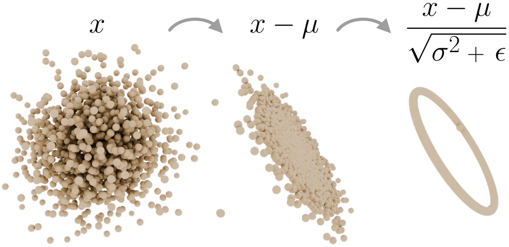
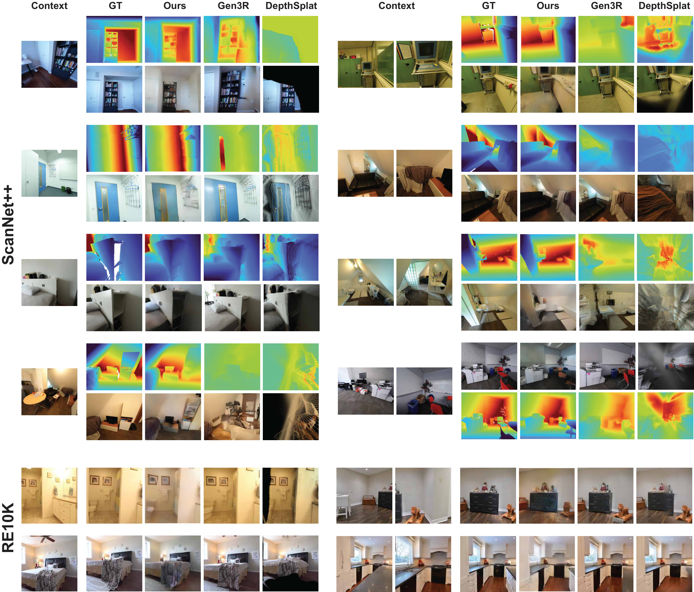
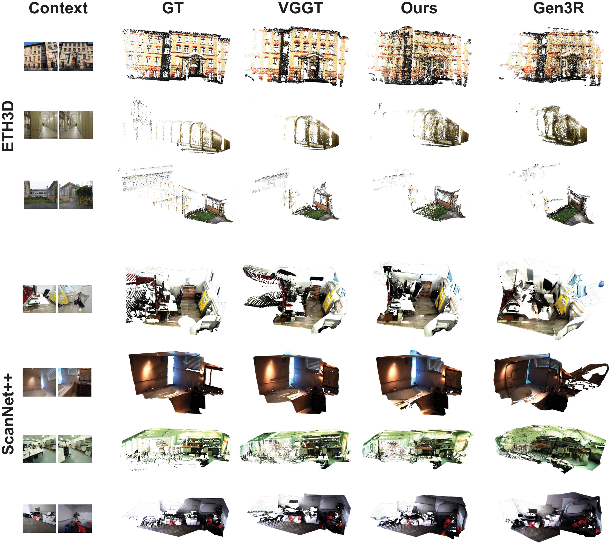

From reconstruction to generation
VGGT is deterministic: it cannot go beyond what the input views support. Our model generates plausible geometry and appearance for unseen regions while faithfully preserving the observed ones.
Grounded in the latent geometry
VGGT tokens do not live in Euclidean space but on a product of four zero-mean hyperspheres. Euclidean flow matching collapses there; our Riemannian formulation keeps every sample on the manifold the frozen decoders expect.
Minimal assumptions
Order-invariant in the context views, works from a single unposed image, and needs only the relative target pose; no input poses, no trajectory or adjacency assumptions of video-diffusion and explicit-reconstruction baselines.
Geometric foundation models, such as the Visual Geometry Grounded Transformer (VGGT), provide strong 3D priors from unposed images. However, such models operate purely in a feed-forward, deterministic regime, i.e. they cannot generate plausible geometry beyond what the input views directly support. Generative models for 3D scenes, on the other hand, must rely on strong geometric priors to produce coherent outputs from sparse inputs. We bridge these two paradigms by performing flow matching directly in VGGT's latent space, leveraging its learned 3D priors without committing to any explicit downstream representation such as Gaussians, meshes, or video-VAE latents. This requires respecting the latent geometry: VGGT tokens occupy a product of high-dimensional hyperspheres on which standard Euclidean flow matching fails. We address this with a Riemannian Flow Matching framework defined on a product manifold of four hyperspheres, aligned with VGGT's multi-scale encoder, which keeps generated tokens on the valid data manifold required by the frozen decoding heads. On RealEstate10K, ScanNet++ and ETH3D, our method achieves strong performance against recent scene generation baselines in both per-view appearance and aggregated 3D geometry, establishing latent-space flow matching on geometric foundation models as a viable paradigm for 3D generation.
Given a set of unposed RGB images of a scene and a target camera pose $\pi \in SE(3)$, our goal is to generate latent features that encode the geometry and appearance of the scene from the target viewpoint, remaining multi-view consistent with the observed views. We cast this as conditional generative modeling on the VGGT encoder latent space: given context tokens $c = \{c^{(1)}, \ldots, c^{(N)}\}$ extracted from the context views and the target pose $\pi$, we model the conditional distribution $p(x_1 \mid c, \pi)$ on a Riemannian manifold $\mathcal{M}$, where $x_1$ is the latent code of the target view.
A frozen VGGT encoder extracts the context tokens, and a transformer velocity field conditioned on $c$ and $\pi$ generates $x_1$ via Riemannian flow matching. Since the model operates directly on VGGT's latent space, its frozen DPT heads decode the generated latents into point maps and depth; a newly trained RGB head adds appearance.

Each of VGGT's four multi-scale feature blocks passes through a LayerNorm before decoding: subtracting the mean and rescaling the norm places every token on a zero-mean hypersphere $\mathcal{S}^{C-2} = \{x \in \mathbb{R}^{C} : \|x\|_2 = \sqrt{C},\ \langle \mathbf{1}, x\rangle = 0\}$. The latent space is therefore an explicit product manifold $\mathcal{M} = (\mathcal{S}^{C-2})^{4}$ as a consequence of the architecture.
Euclidean flow matching pushes probability paths through the empty interior of these spheres. Riemannian flow matching with geodesic interpolants stays on $\mathcal{M}$, so the generated tokens remain valid inputs for the frozen decoding heads.
On ScanNet++ and RE10K we improve over Gen3R and DepthSplat in per-view geometry across all configurations and remain competitive in appearance, despite using strictly less camera information than the baselines. Operating generatively on the VGGT manifold preserves the geometric properties of the backbone while extending it to the unobserved regions that novel-view generation requires.

Fusing generated target views and context views into a single point cloud probes 3D consistency, not just per-view quality. Our scans are coherent and well aligned, close to the VGGT upper bound, and generalize to the out-of-distribution ETH3D scenes, while Gen3R exhibits noticeably larger distortions and misaligned frames.

Replacing our Riemannian formulation with Euclidean flow matching degrades every metric on both modalities: LPIPS by ~44%, RGB FID by ~29%, depth metrics by ~11–18%. Modeling the manifold structure of the latent space is beneficial rather than incidental.
@article{weijler2026latentrfm,
author = {Weijler, Lisa and Ballester, Irene and Mei, Guofeng and Birdal, Tolga and Hermosilla, Pedro},
title = {Latent Riemannian Flow Matching for Geometry-Grounded 3D Foundation Models},
journal = {arXiv preprint},
year = {2026},
}